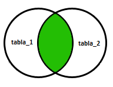
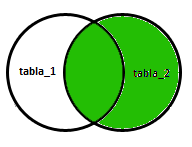
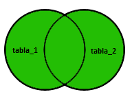

La sentencia SQL JOIN permite consultar datos de 2 o más tablas. Dichas tablas estarán relacionadas entre ellas de alguna forma, a través de alguna de sus columnas. El propósito del JOIN es unir información de diferentes tablas, para no tener que repetir datos entre las tablas.
La sentencia INNER JOIN es el sentencia JOIN por defecto que consiste en combinar cada fila de una tabla con cada fila de la otra tabla, seleccionado las filas que cumplan con una determinada condición.
Esta es la estructura que se ocupa para este tipo de JOIN.
SELECT * FROM tabla_1 INNER JOIN tabla_2 ON condicion
Aquí se muestra un diagrama de como funciona esta consulta.
A continuación se mostrara un ejemplo de una tabla Personas y una de Ordenes de compras que realizaron.
Realizamos la creación de las tablas Personas y Ordenes.
CREATE TABLE Personas(id_persona serial, nombre VARCHAR(30), apellido VARCHAR(30), direccion VARCHAR(30), ciudad VARCHAR(30), PRIMARY kEY(id_persona));
CREATE TABLE Ordenes(id_orden serial, numero_orden INTEGER, persona INTEGER, PRIMARY KEY(id_orden), FOREIGN KEY(persona) REFERENCES Personas(id_persona));
Ahora insertamos algunos datos.
INSERT INTO Personas(nombre, apellido, direccion, ciudad) VALUES('Allen' , 'Doyle' , '772 Azores' , 'New York');
INSERT INTO Personas(nombre, apellido, direccion, ciudad) VALUES('Amy' , 'Looper' , '4525 North Oracle Rd.', 'Miami');
INSERT INTO Personas(nombre, apellido, direccion, ciudad) VALUES('Bibi' , 'Mingus' , '3901 W Ina Rd' , 'Los Angeles');
INSERT INTO Personas(nombre, apellido, direccion, ciudad) VALUES('Caden' , 'Anderson', '7635 N La Cholla Blvd', 'Chicago');
INSERT INTO Personas(nombre, apellido, direccion, ciudad) VALUES('Calvin', 'Dixson' , 'CALLE WALLABY 42' , 'San Francisco');
INSERT INTO Ordenes(numero_orden, persona) VALUES(226345,3);
INSERT INTO Ordenes(numero_orden, persona) VALUES(345478,2);
INSERT INTO Ordenes(numero_orden, persona) VALUES(218909,2);
INSERT INTO Ordenes(numero_orden, persona) VALUES(567432,5);
INSERT INTO Ordenes(numero_orden, persona) VALUES(675209,5);
Y realizamos la consulta para unir las dos tablas, de acuerdo a la condición que detallemos.
postgres=# SELECT Personas.nombre, Personas.apellido, Ordenes.numero_orden FROM Personas INNER JOIN Ordenes ON Personas.id_persona=Ordenes.persona;
nombre | apellido | numero_orden
--------+----------+--------------
Bibi | Mingus | 226345
Amy | Looper | 345478
Amy | Looper | 218909
Calvin | Dixson | 567432
Calvin | Dixson | 675209
(5 filas)
También podemos mostrar todos los atributos.
postgres=# SELECT * FROM Personas INNER JOIN Ordenes ON Personas.id_persona=Ordenes.persona;
id_persona | nombre | apellido | direccion | ciudad | id_orden | numero_orden | persona
------------+--------+----------+-----------------------+---------------+----------+--------------+---------
3 | Bibi | Mingus | 3901 W Ina Rd | Los Angeles | 1 | 226345 | 3
2 | Amy | Looper | 4525 North Oracle Rd. | Miami | 2 | 345478 | 2
2 | Amy | Looper | 4525 North Oracle Rd. | Miami | 3 | 218909 | 2
5 | Calvin | Dixson | CALLE WALLABY 42 | San Francisco | 4 | 567432 | 5
5 | Calvin | Dixson | CALLE WALLABY 42 | San Francisco | 5 | 675209 | 5
(5 filas)
Nota
Se observa que se unen las dos tablas Personas y Ordenes cumpliendo la condición que definimos.
En el caso de existir columnas con el mismo nombre en las relaciones que se combinan, solo se incluirá una de ellas en el resultado de la combinación.
Se crearán dos tablas llamadas Alimentos y Compañia, para realizar el ejemplo que mostrará como funciona el NATURAL JOIN.
CREATE TABLE COMPANIA(id_compania serial, nombre_compania VARCHAR(30), ciudad VARCHAR(30), PRIMARY KEY(id_compania));
CREATE TABLE ALIMENTOS(id_alimento serial, nombre_alimento VARCHAR(30), id_compania INTEGER, PRIMARY KEY(id_alimento), FOREIGN KEY(id_compania) REFERENCES COMPANIA(id_compania));
Ingresamos datos a las tablas.
INSERT INTO COMPANIA(nombre_compania, ciudad) VALUES('Order All' , 'Boston');
INSERT INTO COMPANIA(nombre_compania, ciudad) VALUES('Akas Foods' , 'Delhi');
INSERT INTO COMPANIA(nombre_compania, ciudad) VALUES('Foodies' , 'London');
INSERT INTO COMPANIA(nombre_compania, ciudad) VALUES('sip-n-Bite' , 'New York');
INSERT INTO COMPANIA(nombre_compania, ciudad) VALUES('Jack Hill Ltd', 'London');
INSERT INTO ALIMENTOS(nombre_alimento, id_compania) VALUES('Chex Mix', 2);
INSERT INTO ALIMENTOS(nombre_alimento, id_compania) VALUES('Cheez-lt', 3);
INSERT INTO ALIMENTOS(nombre_alimento, id_compania) VALUES('BN Biscuit', 3);
INSERT INTO ALIMENTOS(nombre_alimento, id_compania) VALUES('Mighty Munch',5);
INSERT INTO ALIMENTOS(nombre_alimento, id_compania) VALUES('Pot Rice', 4);
Ahora podemos realizar la consulta del NATURAL JOIN.
postgres=# SELECT * FROM ALIMENTOS NATURAL JOIN COMPANIA;
id_compania | id_alimento | nombre_alimento | nombre_compania | ciudad
-------------+-------------+-----------------+-----------------+----------
2 | 1 | Chex Mix | Akas Foods | Delhi
3 | 2 | Cheez-lt | Foodies | London
3 | 3 | BN Biscuit | Foodies | London
5 | 4 | Mighty Munch | Jack Hill Ltd | London
4 | 5 | Pot Rice | sip-n-Bite | New York
(5 filas)
Nota
Al realizar el NATURAL JOIN, retorna una tabla con solo una columna llamada id_compania, que estaba repetida en las dos tablas ALIMENTOS y COMPANIA y la unión de las otras columnas.
Al realizar el INNER JOIN con la cláusula USING(attrs).
A continuación mostraremos el ejemplo anterior utilizando la cláusula USING(id_compania) que es la columna que se repite en las dos tablas.
postgres=# SELECT * FROM ALIMENTOS INNER JOIN COMPANIA USING(id_compania);
id_compania | id_alimento | nombre_alimento | nombre_compania | ciudad
-------------+-------------+-----------------+-----------------+----------
2 | 1 | Chex Mix | Akas Foods | Delhi
3 | 2 | Cheez-lt | Foodies | London
3 | 3 | BN Biscuit | Foodies | London
5 | 4 | Mighty Munch | Jack Hill Ltd | London
4 | 5 | Pot Rice | sip-n-Bite | New York
(5 filas)
Se creará el siguiente ejemplo para realizar estas tres consultas.
Crearemos las tablas tabla_A y tabla_B.
CREATE TABLE tabla_A(id serial, nombre VARCHAR(30), PRIMARY KEY(id));
CREATE TABLE tabla_B(id serial, nombre VARCHAR(30), PRIMARY KEY(id));
Ingresamos datos a las tablas.
INSERT INTO tabla_A(nombre) VALUES('Pirate');
INSERT INTO tabla_A(nombre) VALUES('Monkey');
INSERT INTO tabla_A(nombre) VALUES('Ninja');
INSERT INTO tabla_A(nombre) VALUES('Spaghetti');
INSERT INTO tabla_B(nombre) VALUES('Rutabaga');
INSERT INTO tabla_B(nombre) VALUES('Pirate');
INSERT INTO tabla_B(nombre) VALUES('Darth Vader');
INSERT INTO tabla_B(nombre) VALUES('Ninja');
La sentencia LEFT OUTER JOIN ó LEFT JOIN combina los valores de la primera tabla con los valores de la segunda tabla que cumplan con la condición. Si no existe ninguna coincidencia, el lado derecho contendrá null (o vacío).
SELECT * FROM tabla_1 LEFT OUTER JOIN tabla_2 ON tabla_1.columna = tabla_2.columna
Ahora realizamos la consulta con el ejemplo que definimos al comienzo.
postgres=# SELECT * FROM tabla_A LEFT OUTER JOIN tabla_B ON tabla_A.nombre=tabla_B.nombre;
id | nombre | id | nombre
----+-----------+----+--------
1 | Pirate | 2 | Pirate
2 | Monkey | |
3 | Ninja | 4 | Ninja
4 | Spaghetti | |
(4 rows)
Nota
Podemos observar que retorna todos los atributos de la tabla_A (izquierda) y de la tabla_B, solo retorna los atributos que cumplen con la condición que establecimos.
La sentencia RIGHT OUTER JOIN ó RIGHT JOIN combina los valores de la primera tabla con los valores de la segunda tabla. Siempre devolverá las filas de la segunda tabla, incluso aunque no cumplan la condición.
SELECT * FROM tabla_1 RIGHT OUTER JOIN tabla_2 ON tabla_1.columna = tabla_2.columna
A continuación se muestra un diagrama de la consulta.
Ahora realizamos la siguiente consulta.
postgres=# SELECT * FROM tabla_A RIGHT OUTER JOIN tabla_B ON tabla_A.nombre=tabla_B.nombre;
id | nombre | id | nombre
----+--------+----+-------------
| | 1 | Rutabaga
1 | Pirate | 2 | Pirate
| | 3 | Darth Vader
3 | Ninja | 4 | Ninja
(4 rows)
Nota
Se observa que el retorno de la consulta son todos los atributos de tabla_B (derecha) y solo los atributos que cumplen con la condición que definimos de tabla_A.
La sentencia FULL OUTER JOIN ó FULL JOIN combina los valores de la primera tabla con los valores de la segunda tabla. Siempre devolverá las filas de las dos tablas, aunque no cumplan la condición.
SELECT * FROM tabla_1 FULL OUTER JOIN tabla_2 ON tabla_1.columna = tabla_2.columna
A continuación se muestra el diagrama de la consulta.
Ahora se realizará el ejemplo de la consulta.
postgres=# SELECT * FROM tabla_A FULL OUTER JOIN tabla_B ON tabla_A.nombre=tabla_B.nombre;
id | nombre | id | nombre
----+-----------+----+-------------
| | 3 | Darth Vader
2 | Monkey | |
3 | Ninja | 4 | Ninja
1 | Pirate | 2 | Pirate
| | 1 | Rutabaga
4 | Spaghetti | |
(6 rows)
Nota
Se observa que se retornan todos los atributos de tabla_A y tabla_B, aunque no cumpla con la condición.